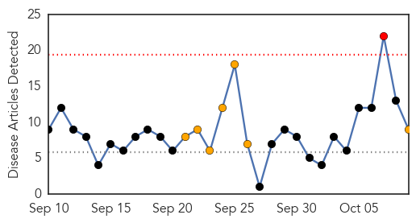
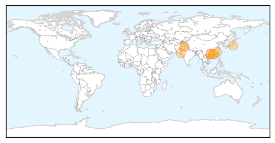
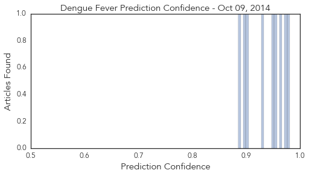
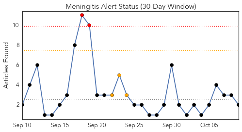
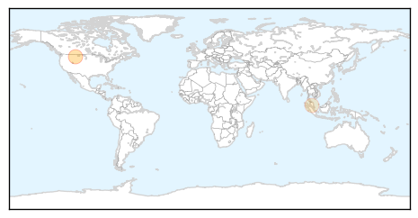
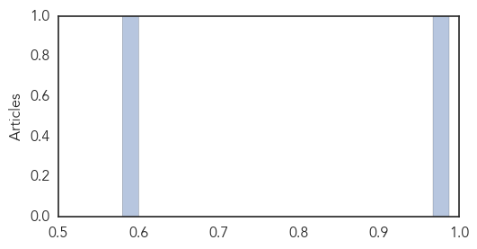

Dengue Fever
30-Day Web Trend
1 alerts, 7 warnings

30-Day Twitter Trend
0 alerts, 2 warnings

Article Locations
Article Confidences
Top Articles:
- 0.980
- China reports more than 27,000 dengue cases- China.org.cn
- 0.973
- Dengue Fever Cases Exceed 27, 000 in China
- 0.962
- Mosquito-borne infection: Health department braces for dengue after rain
- 0.956
- Plans to combat dengue fever to be formulated by next spring ‹ Japan Today
- 0.949
- Dengue fever outbreak up another 1,800 in South China
- 0.931
- Six dead in dengue fever outbreak in southern China
- 0.901
- Post-flood health worries in Pakistan - Pakistan
- 0.899
- Post-flood health worries in Pakistan
- 0.885
- Domestic company's dengue fever test approved
Top Tweets:
- 0.762
- http://t.co/WstY6wOWxg denguevaccine dengue vaccine india ascelbio forecast outbreak sanofi disease forecasting
- 0.577
- Flavivirus news: Mosquito-borne infection: Health department braces for dengue after rain - The... http://t.co/6ac7XBodzS pathogenposse
Meningitis
30-Day Web Trend
2 alerts, 3 warnings

30-Day Twitter Trend
0 alerts, 0 warnings

Article Locations
Article Confidences
Top Articles:
Top Tweets:
-
No tweets found for Oct 09, 2014